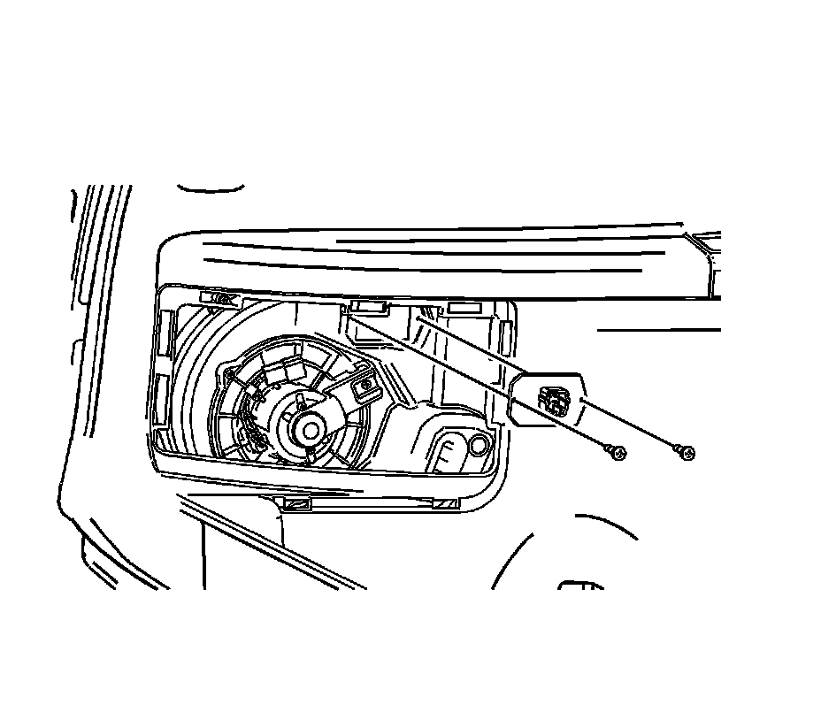

Blower Motor Resistor: Service and Repair
Auxiliary Blower Motor Resistor Replacement
Removal Procedure

1. Remove the left body side trim access panel.
2. Disconnect the electrical connector from the blower motor resistor.

3. Remove the blower motor resistor screws from the HVAC module.
4. Remove the blower motor resistor from the vehicle.
Installation Procedure
1. Install the blower motor resistor.
Notice: Refer to Fastener Notice .
2. Install the blower motor resistor screws.
Tighten the screws to 1 N.m (9 lb in).
3. Connect the electrical connector to the blower motor resistor.
4. Install the left body side trim access panel.